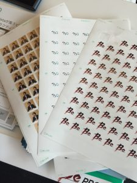

PyCon JP 2016 1日目とブース¶
2016-09-21
PyCon JP 2016 にブース出してます。1日目が終わったです。疲れたです。
初のブース運営で、精神的に一杯一杯で普通のチケットを持っていたのですが、トークに一個もいけませんでした。明日こそは、明日こそは。
ブースでは自社のサービスを宣伝しています。よかったら、お話きかせてください。

スタンプラリー用のシールもキンコーズに行って作ったんですが、余り売れなかったので、明日もあるんでよろしくお願いします！！
用意していたものは諸々役に立ったので良かったなと思っています。明日も頑張ります！遊びに来てください！